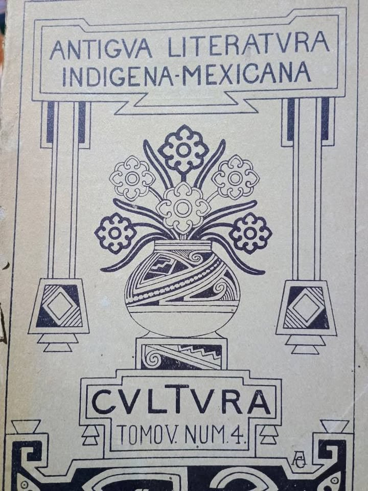
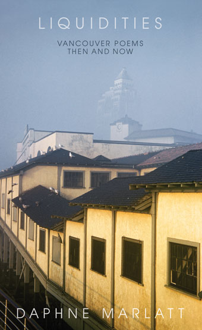
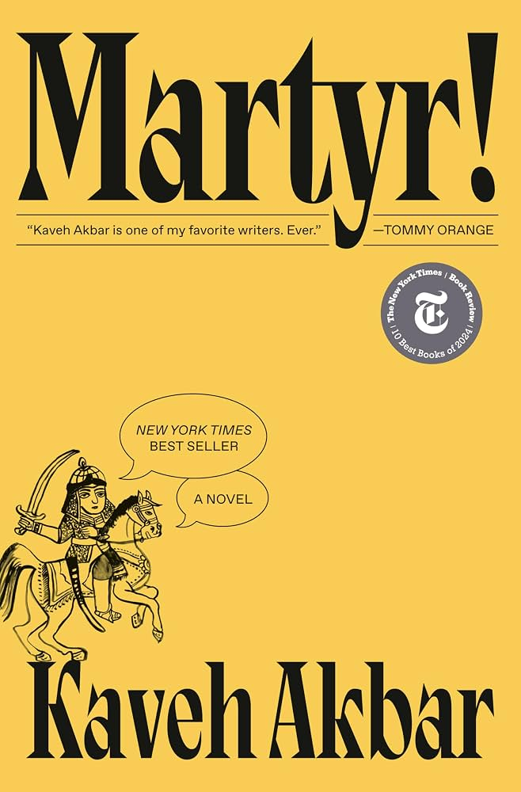

title:
The Comparatist subtitle: News from UCI Comparative Literature issue:
Summer 2026 publisher: Department of Comparative Literature, University
of California, Irvine lang: en-US
The summer behind us broke heat records in one region after another,
month after month. Drought followed the heat, and catastrophic
landslides swept through the Himalayas. Armed conflicts escalated,
leaving a trail of death and a rampant militarism across much of the
world. Nearer to us, it brought the loss of a colleague, a mentor, and a
public intellectual of rare stature.
And still we read, we think, we write, we do our work. That is what
follows here.
In memoriam: Ackbar
Abbas
1942–2026
Professor Ackbar Abbas (b. 1942 in Hong Kong) died peacefully in
Beijing on July 13, 2026, after a brief period of illness. He is
survived by his wife, Sola Liu, his four children and three
grandchildren.
Ackbar joined the Department of Comparative Literature at UCI in
January 2007, after teaching at the University of Hong Kong. His
singular and creative work has had a major impact globally, both in the
academy and as a public intellectual, and brought new ways of thinking
and a new style of writing to UCI. His international recognition is
reflected in his invited keynotes and public lectures, including in
South Africa (WISER), Taipei, Singapore, Seoul, London, Russia, South
Korea, Germany, Canada and Hong Kong. He also served on the editorial
boards of major journals in Hong Kong, Turkey, the UK, Australia, and
the Netherlands.
— Written by Gabriele Schwab, on behalf of the Department of
Comparative Literature
Read the
full statement
A memorial for Professor Ackbar Abbas is being planned in conjunction
with the Global Asias conference at UCI in winter quarter. Details will
be made available at a later date.
Further remembrances
Faculty honors
Congratulations to Jane O. Newman, Professor Emerita of Comparative
Literature, on receiving a 2026–2027 UCI Academic Senate Better World
Award. The award recognizes faculty whose work extends beyond the campus
to serve the wider public, a fitting recognition of Newman’s advocacy
for scholars at risk, alongside her continuing scholarship on Erich
Auerbach.
Read
the announcement
Summer research dispatches
The
coldest summer I ever spent was a winter in Buenos Aires…
Margaux Fitoussi, Assistant Professor of
Comparative Literature

This July, I gave a talk at the University of San Martín about the
history of the moving image in ethnographic fieldwork and my own visual
anthropological practice. I stayed for two months, and while there
became curious about the popular saint Gauchito Gil, a tragic hero from
the northeastern Argentinian province of Corrientes, who is venerated in
thousands of blood-red shrines across the country—on the road, in
cemeteries, in people’s homes. The Gauchito Gil story is, in part, the
late nineteenth-century tale of a military deserter who, moments before
his execution, told a policeman that his ill son would be cured if he
prayed for him, the man he was about to execute. The policeman prayed
for Gauchito Gil, slit his throat and hung him from a tree—then, when
his son had healed, built him a shrine. In Mariana Enríquez’s short
story “El chico sucio” (The Dirty Kid), she explains: “The gaucho brings
luck, heals, helps, and doesn’t ask for much in return, just that these
tributes be paid to him and, sometimes, [with] a little bit of alcohol.”
(2016, 17, translation mine). I have researched the lived experience of
people who pray to local saints before, following Tunisians, both
Muslims and Jews, on similar sorts of pilgrimages. From Tunisia to
Argentina, people journey to pray for any number of reasons, with
requests that speak to injuries of class, faith in the possibility of
miracles, and a willingness to ask for spiritual intervention. Now,
after leaving Buenos Aires, I am returning to Super 8 footage I shot of
an August pilgrimage to a Gauchito Gil shrine on the southern outskirts
of Buenos Aires: the offering of alcohol and cigarettes, the lighting of
candles, individual prayers made in a crowd. New directions that are in
fact old directions in new places.
The Two Marianos
David H. Colmenares, Assistant Professor of
Comparative Literature

After the World Cup ended, the celebrations over Argentina’s defeat
finally abated, and Mexico City downgraded from soccer-crazed to its
usual baseline of bustling vitality, it was time to dive into the
archives I had come to explore. I had two objectives: to learn as much
as possible about the careers of two Nahua intellectuals who lived
around the turn of the twentieth century, and to find the manuscripts
and typescripts of their unpublished and all but forgotten translations
of the Cantares mexicanos, the largest surviving corpus of
pre-Hispanic Indigenous song in any language of the Americas. I found
what I was looking for, but the best part of the summer was finding what
I had not anticipated. Aby Warburg described a common experience of the
researcher as the “law of the good neighbor”: one goes looking for a
particular book or document, only to find that the unfamiliar volume
beside it on the shelf is the one that matters. In my case it was a rich
paper trail documenting the everyday working lives of Mariano Jacobo
Rojas and Mariano Sánchez Santos, the two Indigenous intellectuals who
taught Nahuatl (or Mexicano, as it was then known) at the Museo Nacional
well into the twentieth century. The museum’s archives record with
glorious bureaucratic detail (the administration required monthly and
even weekly reports from everyone from the head archaeologist to the
janitors) the two Marianos’ daily labors as teachers, textual scholars,
and respected linguistic authorities; their persistence, against all
odds, in transcribing and translating difficult sixteenth-century
Nahuatl texts; and their efforts to keep the chair of Nahuatl afloat
through major political upheavals, including the Mexican Revolution. But
the documentation also intimates their personal plights. Some episodes
are funny, and a few resonated with my own experience as a teacher: for
several weeks in March of 1907, none of Sánchez Santos’s students showed
up to class. Others are intriguing, like the pricey scholarly editions
that disappeared at one point from Jacobo Rojas’s office. (I’m happy to
report that the books were later found, as I learned from the report of
a museum janitor with a flair for sleuthing.) Others are simply sad,
like the record of the last months of Sánchez Santos’s life. The
documents also let me reconstruct the changing institutional framework
of the museum, founded in 1825, and the social constellation of
individuals and disciplines that formed the conditions for the study of
pre-Hispanic Mexico in the early twentieth century.
Yiddish in the new old
country
Iris Malke Morrell, PhD Student in Comparative
Literature
![[Alt text to be written.]](assets/morrell-letterpress.jpg)
I began June with a week in Princeton to kick off a translation
fellowship, and spent the rest of the summer co-translating a Hasidic
oration about kabbalistic metaphysics with a delightful cohort.
Simultaneous to translating, I studied Yiddish intensively at the YIVO
Institute in New York City. Upstairs in the same building as the
intensive I visited a book arts collective, founded by new friends of
mine, that is purchasing and maintaining old Yiddish letterpress.
Finally, I spent the first weeks of September conducting an archival
encounter in Berkeley discovering the world of Tree, a journal
of kabbalistic poetry run by beatnik poets who published some of the
first English translations (often highly erroneous ones) of ancient
Jewish mystical texts alongside antiwar discourse and contemporary
mystical and erotic poetry. See the picture below for what I made myself
on the letterpress—what you can’t see is the windows overlooking lower
Manhattan where Yiddish-speaking factory workers used the same machines
a century ago.
Summer readings

Daphne Marlatt, Liquidities: Vancouver
Poems Then and Now (Vancouver: Talonbooks,
2013)
Recommended by Dylan Taylor, PhD
candidate
Chilly, hallucinatory poems or rather “liquid assets”; view-fractures
of livestream city-phenomenology, or that is, the “inchoate dark on the
blank side of the news” as brittle and opaline as any lichen subsisting
in the Pacific Northwest; or that is, its “permeable spasm in
continuity,” or that is, “whose?”; or, that is, not exactly “summer”
reading.

Kaveh Akbar, Martyr!
(New York: Alfred A. Knopf, 2024)
Recommended by Sabella Habtemariam
A strenuously sober poet sets out to make an anthology of martyrs:
Joan of Arc, Bobby Sands, his parents, and soon himself. Follow Cyrus
try to find meaning in death—and the moments before it—as he follows his
roots back to the Iran that left his family behind.
Alumni news
Nathaniel Adan Gonzalez has begun the English M.A. program at Cal
State Fullerton.
“In my time at UCI, I had the privilege of meeting some very genuine
and passionate people, learned to appreciate great literature through
both a historical and political lens, and through theory, practiced a
more abstract and critical way of thinking about the world. Having been
accepted into CSUF’s English MA program, I am excited to continue my
studies with an interest in literature borne out of and enriched by my
experience in UCI’s Comp Lit program.”
If you are a Comp Lit alum with news to share, write to the
Undergraduate Director at dhcolmen@uci.edu.
Fall grants and scholarships
The national scholarship cycles are open now, and several deadlines
fall this quarter. If you have been meaning to look into these, this is
the moment.
Critical Language
Scholarship
A fully funded 8–10 week overseas language and cultural immersion
program, open to undergraduates at every level of language learning.
Students from all disciplines are encouraged to apply, and recent
languages have included Arabic, Chinese, Hindi, Japanese, Korean,
Persian, Portuguese, Russian, and Swahili. This one is unusually
approachable: no campus endorsement is required, and no letters of
recommendation. The deadline is in mid-November for summer 2027. One
rule worth knowing before you start: you may apply for one language
only, and submitting more than one application disqualifies you from all
of them.
Fulbright U.S. Student
Program
The national deadline for the current cycle is October 6, 2026. If
you are a senior applying through UCI’s endorsement process, the campus
deadline has already passed. If you are a junior, this is the year to
begin: strong applications take months to develop, and the campus
deadline runs well ahead of the national one.
UROP
For UCI-internal funding, the department is glad to support students
applying for Undergraduate Research Opportunities Program grants.
Deadlines fall later in the year, but students typically develop a
project with a faculty mentor over the preceding quarter. See urop.uci.edu.
If you are considering applying to any of these, you are warmly
encouraged to reach out to me (dhcolmen@uci.edu) or to any of your
Comparative Literature professors. We are glad to help you think through
projects, programs, and fit.
The essential campus resource is the UCI Scholarship Opportunities
Program (SOP), in 193 Science Library, which handles endorsements and
application preparation for undergraduates and recent graduates. Reach
them at sklrship@uci.edu or visit
scholars.uci.edu. If you are
thinking about Boren, Gilman, Beinecke, Truman, Rhodes, Marshall, or
Mitchell, book an advising appointment now: those campus deadlines
arrive months before the national ones, and that gap is where most
applications are lost.
::: callout
Coffee hour
Comparative Literature and English & Comparative Literary Studies
are holding a joint coffee hour on Wednesday, September 30, from [time],
in the Comparative Literature lobby. Faculty, graduate students,
lecturers, and undergraduates are all welcome.
Coffee and something to eat will be out through the end of the day,
so come by after class if the hour itself doesn’t work. :::
New: a mini free library
in the lobby
There is now a mini free library in the Comparative Literature lobby.
The books are free, and they are there to be taken: undergraduates and
graduate students alike, help yourselves, no sign-out and no return
date. [If you have books you no longer need, leave them on the shelf for
someone else.]
::: colophon ::: design-note ¶ The
design of this issue is inspired by El Lissitzky’s Of Two Squares: A
Suprematist Tale in Six Constructions (Berlin, 1922). In it a red
square and a black square travel through space to a world of dark
disorder, clash, and leave behind a new construction assembled from the
wreckage. The story is narrated almost exclusively through geometry.
Lissitzky’s book is on the syllabus of Philosophical
Fictions, the new Comp Lit 60A, offered for the first time in
Spring 2027. :::
The Comparatist is published quarterly by the Department of
Comparative Literature at the University of California, Irvine. Edited
by David H. Colmenares, Director of Undergraduate Studies. News and
contributions are welcome at dhcolmen@uci.edu. :::